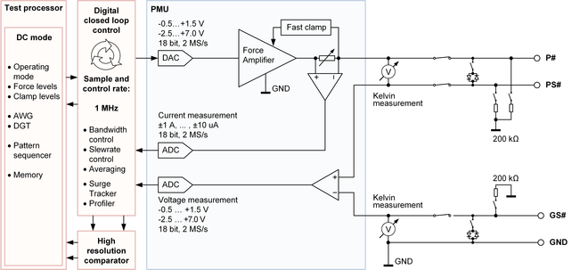
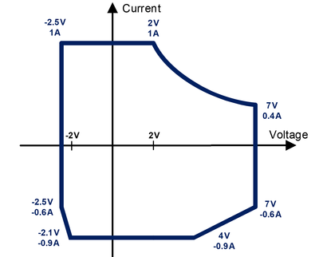

XPS256 functionality and features
The XPS256 is a high-density scalable DUT power supply and V/I card for all SOC test applications. The card belongs to the DC Scale family and can reside in any channel card slot of a V93000 EXA Scale system.
Variants
| XPS256 | (EK751HC) | 256 channels | Source current |
1.0 A @ -2.5 V … +3.0 V 0.6 A @ -2.5 V … +7.0 V |
| Sink current |
1.0 A @ -2.0 V … +3.0 V 0.6 A @ -2.5 V … +7.0 V |
Block diagram XPS256 (EK751HC)

Key characteristics XPS256 (EK751HC)
- 256 DCVI channels per card
- -2.5 V ... +7.0 V, up to 1.0 A per channel
- Up to 256 A per card (@ 2.0 V)
- Full 4 quadrant VI source
- All channels gangable
- High accuracy force & measure
- ± 150 µV voltage (10 µV resolution)
- ± 50 nA current (100 pA resolution)
- Low voltage drop for large ΔI / Δt
- Voltage drop < 40 mV
- Settling time after load step < 10 µs
- Universal DCVI channel
- AWG and Digitizer per pin for voltage and current
- Channels protected up to ± 80 V
- Overcurrent protection
- Fast current clamp per channel
- Voltage drop monitoring / alarms
- Profiling for voltage and current
- Voltage and current capability

The power diagram is valid for simultaneous operation of all channels and 0.2 V maximum total force line voltage drop.
See also the XPS256 voltage and current capability specifications.
Other characteristics
- Sense connection test / Kelvin test unit
- Safety shutdown via utility line
- Smart Connect avoids glitches caused by hot switching when connecting a channel to an already powered-up DUT pin.
- Compatible to DPS128. The DPS128 functions and ranges are subset of XPS256.
- Massive channel ganging allows replacement of the DC Scale UHC4T card.
- Xtreme Link technology for fast communication between ganged channels and superior data transfer speed for uploading of profiling data and digitizer data.
-
Hardware based averaging for better accuracy and throughput.
Current monitor
DC Scale XPS256 cards offer the functionality to monitor the output current of ganging groups via other XPS256 pins. The monitor output pins can be configured in such a way that they drive a voltage proportional to the total current of the assigned ganging group.
For more information, refer to XPS256 current monitor.
Open loop protection
Open loop protection of the XPS256 means how the force pin (P#) and the sense pin (PS#) ) as well as the ground sense pin (GS#) and the common ground are connected internally to ensure that the feed back input of the control loop or the output stage respectively is not open in case the required connection at the DUT or on the DUT board is (unintentionally) open.
The default state of the open loop protection is "DIODE": The sense pins are internally connected to the force pins via two anti-parallel diodes.
The open loop protection must be set to "NONE" if the maximum voltage drop on the force line or return set is set to a voltage > 0.5 V.
For more information, refer to XPS256 programming - Open loop protection.
Surge tracker
The XPS256 card features a surge tracker per channel that monitors the voltage between the high sense (PS#) and ground sense (GS#) pins or the output current of the PMU.
For more information, refer to XPS256 surge tracker.
Functional changes
- Introduced in SmarTest 7.10.1
- SmarTest 7.10.2: New Current monitor
- SmarTest 7.10.3: New open loop protection